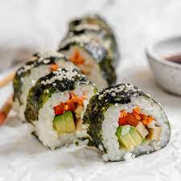

Sushi

Description
Sushi is a popular Japanese dish that consists of
various types of raw fish, crab, squid combined with rice
and sometimes vegetables depending on which style of sushi
is being made. For this recipe we will focus on salmon maki
roll sushi.
Ingredients
- Salmon
- Sushi rice
- Sushi seaweed
- (Optional)Soy sauce
- Wasabi
Steps
- Firstly, wash your sushi rice and place it into
your rice cooker for 20 mins.
- Cut your salmon into thin strips, almost as long
as your bamboo sheet
- Place and center your seaweed onto your bamboo sheet.
- When your rice is ready, get a scoop of rice and spread
it out onto your seaweed, with the left and right sides
almost touching the edge, while the top and bottom sides
almost reach the edge of the seaweed.
- Place a salmon strip horizontally and towards the bottom edge
of your bed of rice.
- Add a really thin strip of wasabi along the salmon
- Grab the ends of the bamboo sheet and start to wrap your
ingredients.
- Tightly wrap your sushi roll, remove the bamboo sheet carefully
and dice the role into your desired size.
- Use the soy sauce to dip your pieces of sushi before
eating them.